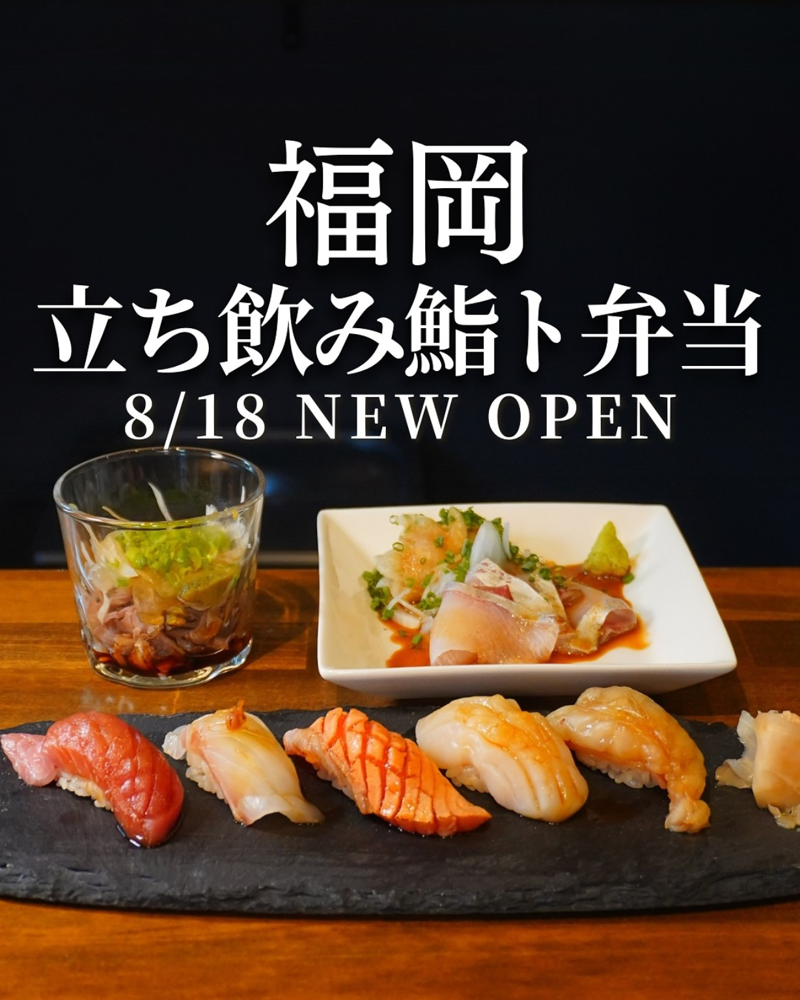
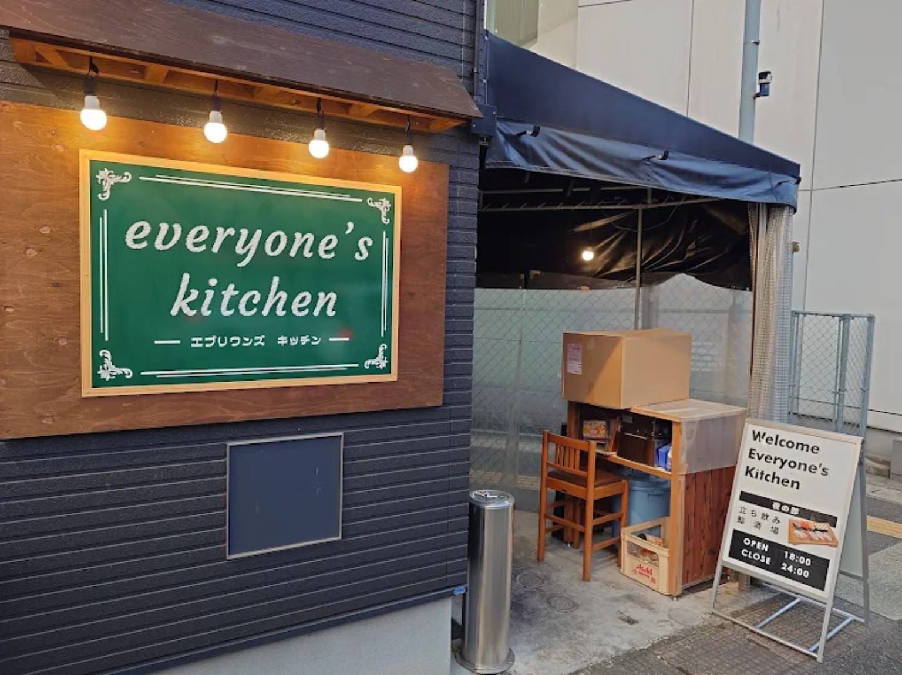
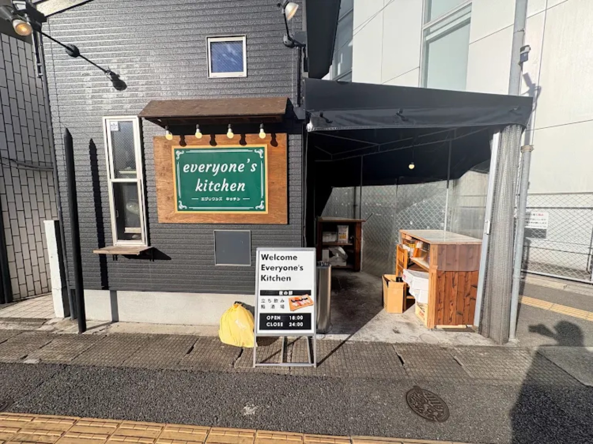
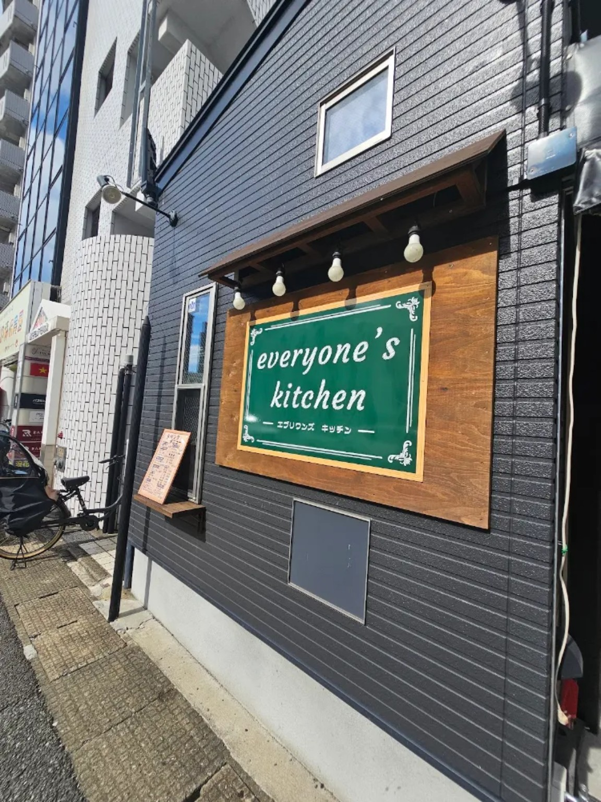

本日の日替わり売り切れ
FUKUOKA / BENTO / SUSHI / SAKE
昼は弁当、
夜は鮨。
気軽に、うまいを、みんなで。Everyone’s kitchenは、日常のすぐそばで楽しめる「みんなの台所」を目指すお店です。

鮨・弁当・一品料理
※掲載内容はサンプルです
※掲載内容はサンプルです
CONCEPT
みんなの台所。
昼は、こだわりの弁当。夜は、気軽に鮨と一杯。高級すぎず、カジュアルすぎない。仕事帰りにも、ふらっと立ち寄れる場所へ。
昼お弁当・セット
夜鮨・一品・お酒
気軽立ち飲みスタイル

お知らせ
TODAY\'S SPECIAL
本日のおすすめ
その日だからこそ楽しめるおすすめを、店主がスマホから更新します。
本日のおすすめ
本日のおすすめはただいま準備中です。最新情報は店頭・SNSでもご確認ください。
HAPPY HOUR
せんべろセット
お好きなドリンク2杯＋フード2品。ちょい飲みにちょうどいい、気軽なセットです。
¥1,000 税込
画像では「OPEN〜20時まで」「1人1回まで」と案内されています。正式な提供条件は最新情報に差し替えてください。
詳しく見る →
GALLERY
お店の空気まで、伝える。


お好きな画像を
お入れください店内・カウンター・スタッフなど
お入れください店内・カウンター・スタッフなど
お好きな画像を
お入れください料理・お酒・仕込み風景など
お入れください料理・お酒・仕込み風景など
CONTACT
今日の一杯を、ここで。
予約・営業時間・テイクアウトなどのお問い合わせ導線をここに集約できます。